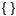
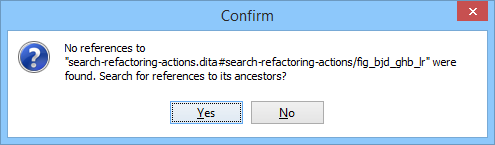

DITA Topic Author Mode Actions
A variety of actions are available for DITA documents that can be found in DITA menu, toolbar, contextual menu, and the Content Completion Assistant.
DITA Toolbar Actions
The following default actions are available on the DITA toolbar when editing in Author mode (by default, most of them are also available in the DITA menu and in various submenus of the contextual menu):
 Bold
Bold- Surrounds the selected text with a
<b>tag. You can use this action on multiple non-contiguous selections.  Italic
Italic- Surrounds the selected text with an
<i>tag. You can use this action on multiple non-contiguous selections.  Underline
Underline- Surrounds the selected text with a
<u>tag. You can use this action on multiple non-contiguous selections.  Link
Actions Drop-Down Menu
Link
Actions Drop-Down Menu-
The following link actions are available from this menu:
- Cross Reference
- Opens the Cross Reference (xref) dialog box that allows you to insert a link to a target DITA resource at the current location within a document. The target resource can be the location of a file or a key that is already defined in your DITA map structure. Once the target resource has been selected, you can also target specific elements within that resource. For more information, see Linking in DITA Topics.
- File Reference
- Opens the File Reference dialog box that allows you to insert a link to a target non-DITA file resource at the current location within a document. The target resource can be the location of a file or a key that is already defined in your DITA map structure. For more information, see Linking in DITA Topics.
- Web Link
- Opens the Web Link dialog box that allows you to insert a link to a target web-related resource at the current location within a document. The target resource can be a URL or a key that is already defined in your DITA map structure. For more information, see Linking in DITA Topics.
- Related Link to Topic
- Opens the Cross Reference (xref) dialog box that
allows you to insert a link to a target DITA resource in a related links
section at the bottom of the current document. The target resource can be the
location of a file or a key that is already defined in your DITA
map structure. Once the target resource has been selected, you can
also target specific elements within that resource. If a related links section
does not already exist, this action creates one. For more information, see
Linking in DITA Topics.Tip: You can use the Find Similar Topics action (available in the contextual menu or DITA menu) to quickly find related topics that can be added as related links. It opens the Open/Find Resource view and performs a search using text content from the
<title>,<shortdesc>,<keyword>, and<indexterm>elements. - Related Link to File
- Opens the File Reference dialog box that allows you to insert a link to a target non-DITA file resource in a related links section at the bottom of the current document. The target resource can be the location of a file or a key that is already defined in your DITA map structure. If a related links section does not already exist, this action creates one. For more information, see Linking in DITA Topics.
- Related Link to Web Page
- Opens the Web Link dialog box that allows you to insert a link to a target web-related resource in a related links section at the bottom of the current document. The target resource can be a URL or a key that is already defined in your DITA map structure. If a related links section does not already exist, this action creates one. For more information, see Linking in DITA Topics.
 Insert
Image
Insert
Image- Opens the Insert Image dialog box that allows you to configure the properties of an image to be inserted into a DITA document at the cursor position.
 Insert Media
Resource
Insert Media
Resource- Opens the Insert
Media dialog box that allows you to select and configure the
properties of a media object to be inserted into a DITA document at the cursor
position. The result will be that a reference to the specified video, audio, or
embedded HTML frame is inserted in an
<object>element and it is rendered in Author mode so that it can be played directly from there. - Insert Section Drop-Down Menu
-
The following insert actions are available from this menu:
 Insert
Section
Insert
Section- Inserts a new
<section>element in the document, depending on the current context. - Insert Concept
- Inserts a new
<concept>element, depending on the current context. Concepts provide background information that users must know before they can successfully work with a product or interface.  Insert Task
Insert Task- Inserts a new
<task>element, depending on the current context. Tasks are the main building blocks for task-oriented user assistance. They generally provide step-by-step instructions that will help a user to perform a task.  Insert Topic
Insert Topic- Inserts a new
<topic>element, depending on the current context. Topics are the basic units of DITA content and are usually organized around a single subject.  Insert Reference
Insert Reference- Inserts a new
<reference>element, depending on the current context. A reference is a top-level container for a reference topic.
- Insert Paragraph
- Inserts a new paragraph at current cursor position.
- Reuse Content
-
This action provides a mechanism for reusing content fragments. It opens the Reuse Content dialog box that allows you to insert several types of references to reusable content at the cursor position. The types of references that you can insert using this dialog box include content references (
@conref), content key references (@conkeyref), or key references to metadata (@keyref). - Insert step or list item
- Inserts a new list or step item in the current list type.
- Insert Unordered List
- Inserts an unordered list at the cursor position. A child list item is also automatically inserted by default. You can also use this action to convert selected paragraphs or other types of lists to an unordered list.
- Insert Ordered List
- Inserts an ordered list at the cursor position. A child list item is also automatically inserted by default. You can also use this action to convert selected paragraphs or other types of lists to an ordered list.
- Sort
- Sorts cells or list items in a table.
 Insert Table
Insert Table- Opens a dialog box that allows you to configure and insert a table. You can generate a
header and footer, set the number of rows and columns of the table and decide how the
table is framed. You can also use this action to convert selected paragraphs, lists, and
inline content (mixed content, text plus markup, that is rendered inside a block element) into a table,
with the selected content inserted in the first column, starting from the first row
after the header (if a header is inserted).Note: If the selection contains a mixture of elements that cannot be converted, you will receive an error message saying that Only lists, paragraphs, or inline content can be converted to tables.
 Insert Row
Insert Row- Inserts a new table row with empty cells below the current row. This action is available when the cursor is positioned inside a table.
- Delete Row(s)
- Deletes the table row located at the cursor position or multiple rows in a selection.
 Insert Column
Insert Column- Inserts a new table column with empty cells after the current column. This action is available when the cursor is positioned inside a table.
 Delete
Column(s)
Delete
Column(s)- Deletes the table column located at the cursor position or multiple columns in a selection.
- Table Properties
- Opens the Table properties dialog box that allows you to configure properties of a table (such as frame borders).
- Join Cells
- Joins the content of the selected cells (both horizontally and vertically).
- Split Cell
- Splits the cell at the cursor location. If Oxygen XML Author detects more than one option to split the cell, a dialog box will be displayed that allows you to select the number of rows or columns to split the cell into.
DITA Contextual Menu Actions
The following actions are available in the contextual menu when editing in Author mode (most of them are also available in the DITA menu at the top of the interface):
- Add File to Review Task
- This action can be used to add the current document to a task in the Content Fusion Tasks Manager view. Oxygen Content Fusion is a flexible, intuitive collaboration platform designed to adapt to any type of documentation review workflow. This functionality is available through a pre-installed connector add-on. To fully take advantage of all of the benefits and features of Content Fusion, your organization will need an Oxygen Content Fusion Enterprise Server. For more information, see the Oxygen Content Fusion website.
 Edit
Attributes
Edit
Attributes- Displays an in-place attributes editor that allows you to manage the attributes of an element.
- Edit Profiling Attributes
- Allows you to change the profiling attributes defined on all selected elements.
- Cut (Ctrl + X (Command + X on OS X))
- Removes the currently selected content from the document and places it in the clipboard.
 Copy (Ctrl + C (Command + C on
OS X))
Copy (Ctrl + C (Command + C on
OS X))- Places a copy of the currently selected content in the clipboard.
 Paste (Ctrl + V (Command + V on
OS X))
Paste (Ctrl + V (Command + V on
OS X))- Inserts the current clipboard content into the document at the cursor position.
- Paste special submenu
-
This submenu includes the following special paste actions that are specific to the DITA framework:
- Paste as content reference
- Inserts a content reference (a DITA element with a
@conrefattribute) to the DITA XML element from the clipboard. An entire DITA XML element with an ID attribute must be present in the clipboard when the action is invoked. Theconrefattribute will point to this ID value. - Paste as content key reference
- Allows you to indirectly reference content using the
@conkeyrefattribute. When the DITA content is processed, the key references are resolved using key definitions from DITA maps. To use this action, you must first do the following:- Make sure the DITA element that contains the copied content has an ID attribute assigned to it.
- In the DITA Maps Manager view, make sure that the Context combo box points to the correct map that stores the keys.
- Make sure the topic that contains the content you want to reference has a key assigned to it. To assign a key, right-click the topic with its parent map opened in the DITA Maps Manager, select Edit Properties, and enter a value in the Keys field.
- Paste as link
- Looks for the first element with an ID value in the clipboard and inserts an
<xref>that points to that element. If no elements with an ID value are found, a message will appear that informs you that to use this action, the clipboard contents must include at least one element with a declared ID. - Paste as link (keyref)
- Inserts a link to the element that you want to reference. To use this action,
you must first do the following:
- Make sure the DITA element that contains the copied content has an ID attribute assigned to it.
- In the DITA Maps Manager view, make sure that the Context combo box points to the correct map that stores the keys.
- Make sure the topic that contains the content you want to reference has a key assigned to it. To assign a key, right-click the topic with its parent map opened in the DITA Maps Manager, select Edit Properties, and enter a value in the Keys field.
- Insert submenu
-
This submenu includes the following insert actions that are specific to the DITA framework:
- Insert Table
- Opens a dialog box that allows you to configure and insert a table. You can generate a
header and footer, set the number of rows and columns of the table and decide how the
table is framed. You can also use this action to convert selected paragraphs, lists, and
inline content (mixed content, text plus markup, that is rendered inside a block element) into a table,
with the selected content inserted in the first column, starting from the first row
after the header (if a header is inserted).Note: If the selection contains a mixture of elements that cannot be converted, you will receive an error message saying that Only lists, paragraphs, or inline content can be converted to tables.
 Insert Image
Insert Image- Inserts an image reference at the cursor position. Depending on the current location, an image-type element is inserted.
 Insert Media
Resource
Insert Media
Resource- Opens a Choose Media dialog box that allows you to select the URL of a media object to be inserted into a document at the cursor position. The result will be that a reference to the specified video, audio, or embedded HTML frame is inserted and rendered in Author mode so that it can be played directly from there.
 Insert
Equation
Insert
Equation- Opens the XML Fragment Editor that allows you to insert and edit MathML notations.
 Insert
Note
Insert
Note- Inserts a new
<note>element at the current cursor position. - Insert Code Block
- Inserts a new
<codeblock>element at current cursor position. - Insert Menu Cascade
- Inserts a new
<menucascade>element at current cursor position. - Insert Paragraph
- Inserts a new
<p>(paragraph) element at current cursor position. - Insert
Section
- Inserts a new
<section>element in the document, depending on the current context. - Insert
Topic
- Inserts a new
<topic>element, depending on the current context. Topics are the basic units of DITA content and are usually organized around a single subject. - Insert Entity
- Allows you to insert a predefined entity or character entity. Surrogate
character entities (range #x10000 to #x10FFFF) are also accepted. Character
entities can be entered in one of the following forms:
- #<decimal value> - e.g. #65
- &#<decimal value> - e.g. A
- #x<hexadecimal value> - e.g. #x41
- &#x<hexadecimal value> - e.g. A
- Style submenu
- This submenu includes the following text styling actions:
- Bold
- Emphasizes the selected text by surrounding it with a
<b>(bold) tag. You can use this action on multiple non-contiguous selections. - Italic
- Emphasizes the selected text by surrounding it with an
<i>(italic) tag. You can use this action on multiple non-contiguous selections. - Underline
- Emphasizes the selected text by surrounding it with a
<u>(underline) tag. You can use this action on multiple non-contiguous selections. - Subscript
- Surrounds the selected text with a
<sub>(subscript) tag, used for inserting a character (number, letter, or symbol) that will appear slightly below the baseline and slightly smaller than the rest of the text.  Superscript
Superscript- Surrounds the selected text with a
<sup>(superscript) tag, used for inserting a character (number, letter, or symbol) that will appear slightly above the baseline and slightly smaller than the rest of the text. - Code
- Surrounds the selected text with a
<codeph>tag.  UI
Control
UI
Control- Surrounds the selected text with a
<uicontrol>tag, used to mark up names of buttons, entry fields, menu items, or other interface objects.  Filepath
Filepath- Surrounds the selected text with a
<filepath>tag, used to indicate the name, and optionally the location of a referenced file. You can specify the directory that contains the file and other directories that may precede it in the system hierarchy.
- Image Map Editor
- This action is available in the contextual menu when it is invoked on an image. This action applies an image map to the current image (if one does not already exist) and opens the Image Map Editor dialog box. This feature allows you to create hyperlinks in specific areas of an image that will link to various destinations.
- Table Actions
-
A variety of table editing actions are available in the contextual menu when it is invoked on a table (depending on the context, the table-related actions are promoted to the top level of the contextual menu and the Other Actions submenu provides access to the other actions):
- Insert Rows
- Opens a dialog box that allows you to insert any number of rows and specify the position where they will be inserted (Above or Below the current row).
- Delete Row(s)
- Deletes the table row located at the cursor position or multiple rows in a selection.
- Insert Columns
- Opens a dialog box that allows you to insert any number of columns and specify the position where they will be inserted (Above or Below the current column).
- Delete
Column(s)
- Deletes the table column located at the cursor position or multiple columns in a selection.
- Join Cells
- Joins the content of the selected cells (both horizontally and vertically).
- Split Cell
- Splits the cell at the cursor location. If Oxygen XML Author detects more than one option to split the cell, a dialog box will be displayed that allows you to select the number of rows or columns to split the cell into.
- Sort
- Sorts cells or list items in a table.
- Table Properties
- Opens the Table properties dialog box that allows you to configure properties of a table (such as frame borders).
- Other Actions submenu
- This submenu give you access to all the usual contextual menu actions.
- Link submenu
-
The following link actions are available from this submenu:
- Cross Reference
- Opens the Cross Reference (xref) dialog box that allows you to insert a link to a target DITA resource at the current location within a document. The target resource can be the location of a file or a key that is already defined in your DITA map structure. Once the target resource has been selected, you can also target specific elements within that resource. For more information, see Linking in DITA Topics.
- File Reference
- Opens the File Reference dialog box that allows you to insert a link to a target non-DITA file resource at the current location within a document. The target resource can be the location of a file or a key that is already defined in your DITA map structure. For more information, see Linking in DITA Topics.
- Web Link
- Opens the Web Link dialog box that allows you to insert a link to a target web-related resource at the current location within a document. The target resource can be a URL or a key that is already defined in your DITA map structure. For more information, see Linking in DITA Topics.
- Related Link to Topic
- Opens the Cross Reference (xref) dialog box that
allows you to insert a link to a target DITA resource in a related links
section at the bottom of the current document. The target resource can be the
location of a file or a key that is already defined in your DITA
map structure. Once the target resource has been selected, you can
also target specific elements within that resource. If a related links section
does not already exist, this action creates one. For more information, see
Linking in DITA Topics.Tip: You can use the Find Similar Topics action (available in the contextual menu or DITA menu) to quickly find related topics that can be added as related links. It opens the Open/Find Resource view and performs a search using text content from the
<title>,<shortdesc>,<keyword>, and<indexterm>elements. - Related Link to File
- Opens the File Reference dialog box that allows you to insert a link to a target non-DITA file resource in a related links section at the bottom of the current document. The target resource can be the location of a file or a key that is already defined in your DITA map structure. If a related links section does not already exist, this action creates one. For more information, see Linking in DITA Topics.
- Related Link to Web Page
- Opens the Web Link dialog box that allows you to insert a link to a target web-related resource in a related links section at the bottom of the current document. The target resource can be a URL or a key that is already defined in your DITA map structure. If a related links section does not already exist, this action creates one. For more information, see Linking in DITA Topics.
- Sort
- Available when invoked on a list, it opens a dialog box where you can configure a sorting operation for an entire list or a selection of list items.
- Generate IDs
-
Oxygen XML Author generates unique IDs for the current element (or elements), depending on how the action is invoked:
- When invoked on a single selection, an ID is generated for the selected element at the cursor position.
- When invoked on a block of selected content, IDs are generated for all top-level elements and elements listed in the ID Options dialog box that are found in the current selection.
Note: The Generate IDs action does not overwrite existing ID values. It only affects elements that do not already have an@idattribute. - Reuse submenu
-
This submenu includes the following actions regarding reusing content in DITA:
- Reuse Content
-
This action provides a mechanism for reusing content fragments. It opens the Reuse Content dialog box that allows you to insert several types of references to reusable content at the cursor position. The types of references that you can insert using this dialog box include content references (
@conref), content key references (@conkeyref), or key references to metadata (@keyref). - Push Current Element
- Opens the Push current element dialog box that allows content from a source topic to be inserted into another topic without any special coding in the topic where the content will be re-used.
- Edit Content Reference
- This action is available for elements with a
@conrefor@conkeyrefattribute. It opens the Edit Content Reference dialog box that allows you to edit the source location (or key) and source element of a content reference (or content key reference), and the reference details (@conref/@conkeyrefand@conrefendattributes). For more information, see Reuse Content Dialog Box. - Replace Reference with Content
- Replaces the referenced fragment (
@conrefor@conkeyref) at the cursor position with its content from it source. This action is useful if you want to make changes to the content in the currently edited document without changing the referenced fragment in its source location. If the source content includes references to other topics/resources (hrefs), the operation also resolves those references relative to the new location. Attributes are preserved according to the following priority:- Attributes from the elements in the current document that reference other content
are preserved except for attributes with a
-dita-use-conref-targetvalue. - Attributes from the referenced content are brought into the replaced elements in
the current document except for
@idattributes.
- Attributes from the elements in the current document that reference other content
are preserved except for attributes with a
- Replace All References with Content
-
Replaces all referenced fragments (
@keyref,@conref, or@conkeyref) in the current document with the content. Attributes are preserved according to the following priority:- Attributes from the elements in the current document that reference other
content are preserved except for attributes with a
-dita-use-conref-targetvalue. - Attributes from the referenced content are brought into the replaced elements in
the current document except for
@idattributes.
For keyrefs inside
<xref>or<link>elements, the@keyrefattribute is changed to an@hrefattribute, while the rest of the content for the keyref is replaced with its source content.If the source content includes references to other topics/resources (hrefs), the operation also resolves those references relative to the new location.
- Attributes from the elements in the current document that reference other
content are preserved except for attributes with a
- Remove Content Reference
- Removes the content reference (
@conrefor@conkeyref) inside the element at the cursor position. - Create Reusable Component
- Opens a dialog box that helps you to create a reusable component from the current
element or selection of elements. If the Replace selection with content
reference option is selected in the dialog box, the selection will be
replaced with a content reference (
@conref). If multiple elements are selected (for example, multiple steps or list items), the selection will be replaced with a content reference range (@conrefand@conrefend). For more information, see Creating a Reusable Content Component. - Insert Reusable Component
- Inserts a reusable component at cursor location. For more information, see Inserting a Reusable Content Component.
 Search
References (Ctrl + Shift
+ G (Command + Shift + G on OS X))
Search
References (Ctrl + Shift
+ G (Command + Shift + G on OS X))-
Finds the references to the
@idattribute value for the element at the current cursor position, in all the topics contained in the current DITA map (opened in the DITA Maps Manager view). If no references are found for the current element, a dialog box will be displayed that offers you the option of searching for references to its ancestor elements.Figure 1. Search References to Ancestors Dialog Box Tip: If you are invoking the action on an image, see Searching for References to Images for details about what will be reported. - Find Similar Topics
- Opens the Open/Find Resource view and performs a search using
text content from the
<title>,<shortdesc>,<keyword>, and<indexterm>elements. It is helpful for quickly finding related topics that can be added as related links. - Show Key Definition
- Available for elements that have a
@conkeyrefor@keyrefattribute set (or elements with an ancestor element that has a@conkeyrefor@keyrefattribute). It computes the key name and opens the DITA map that contains the definition of the key with the element that defines that key selected. - About Element submenu
-
This submenu includes the following actions:
- Style Guide
- Opens the DITA Style Guide Best Practices for Authors in your browser and displays a topic that is relevant to the element at the cursor position. When editing DITA documents, this action is available in the contextual menu of the editing area (under the About Element sub-menu), in the DITA menu, and in some of the documentation tips that are displayed by the Content Completion Assistant.
- Browse reference manual
- Opens a reference to the documentation of the XML element closest to the cursor position in a web browser.
 Go to Definition
Go to Definition- Moves the cursor to the definition of the current element.
- Select submenu
-
This submenu allows you to select the following:
- Element
- Selects the entire element at the current cursor position.
- Content
- Selects the entire content of the element at the current cursor position, excluding the start and end tag. Performing this action repeatedly will result in the selection of the content of the ancestor of the currently selected element content.
- Parent
- Selects the entire parent element at the current cursor position.
- Text submenu
-
This submenu contains the following actions:
- To Lower Case
- Converts the selected content to lower case characters.
- To Upper Case
- Converts the selected content to upper case characters.
- Capitalize Sentences
- Converts to upper case the first character of every selected sentence.
- Capitalize Words
- Converts to upper case the first character of every selected word.
- Count Words
- Counts the number of words and characters (no spaces) in the entire document
or in the selection for regular content and read-only content. Note: The content marked as deleted with change tracking is ignored when counting words.
- Convert Hexadecimal Sequence to Character (Ctrl + Shift + X (Command + Shift + X on OS X))
-
Converts a sequence of hexadecimal characters to the corresponding Unicode character. The action can be invoked if there is a selection containing a valid hexadecimal sequence or if the cursor is placed at the right side of a valid hexadecimal sequence. A valid hexadecimal sequence can be composed of 2 to 4 hexadecimal characters and may or may not be preceded by the
0xor0Xprefix. Examples of valid sequences and the characters they will be converted to:0x0045will be converted toE0X0125toĥ265toɥ2190to←Note: For more information about finding the hexadecimal value of a character, see Finding the Decimal, Hexadecimal, or Character Entity Equivalent.
- Refactoring submenu
-
Contains a series of actions designed to alter the XML structure of the document:
- Toggle Comment
- Encloses the currently selected text in an XML comment, or removes the comment if it is commented.
- Move Up (Alt + UpArrow)
- Moves the current node or selected nodes in front of the previous node.
- Move Down (Alt + DownArrow)
- Moves the current node or selected nodes after the subsequent node.
 Split
Element
(Alt + Shift + D
(Ctrl + Alt + D on OS X))
Split
Element
(Alt + Shift + D
(Ctrl + Alt + D on OS X))- Splits the content of the closest element that contains the position of the cursor. Thus, if the cursor is positioned at the beginning or at the end of the element, the newly created sibling will be empty.
 Join
Elements
Join
Elements- Joins two adjacent block elements that have the same name. The action is available only when the cursor position is between the two adjacent block elements. Also, joining two block elements can be done by pressing the Delete or Backspace keys and the cursor is positioned between the boundaries of these two elements.
 Surround with Tags
(Ctrl + E (Command + E on
OS X))
Surround with Tags
(Ctrl + E (Command + E on
OS X))- Allows you to choose a tag to enclose a selected portion of content. If there is no
selection, the start and end tags are inserted at the cursor position.
- If the Position cursor between tags option is selected in the Content Completion preferences page, the cursor is placed between the start and end tag.
- If the Position cursor between tags option is not selected in the Content Completion preferences page, the cursor is placed at the end of the start tag, in an insert-attribute position.
- Surround with '[tag]'
(Ctrl +
ForwardSlash (Command + ForwardSlash on OS X))
- Surround the selected content with the last tag used.
 Rename
Element
Rename
Element- The element from the cursor position, and any elements with the same name, can be renamed according with the options from the Rename dialog box.
 Delete Element Tags
Delete Element Tags- Deletes the tags of the closest element that contains the position of the cursor. This operation is also executed if the start or end tags of an element are deleted by pressing the Delete or Backspace keys.
 Remove
All Markup
Remove
All Markup- Removes all the XML markup inside the selected block of content and keeps only the text content.
- Remove Text
- Removes the text content of the selected block of content and keeps the markup intact with empty elements.
- DITA Refactoring Actions
-
A variety of built-in XML refactoring operations that pertain to DITA documents with some of the information preconfigured based upon the current context.
- Change Topic ID to File Name
- Use this operation to change the ID of a topic to be the same as its file name.
- Convert CALS Tables to Simple Tables
- Use this operation to convert DITA CALS tables to simple tables. If you invoke this operation from a nested table (a table inside a table), only the nested table will be affected. If it is invoked on a parent table that contains nested tables, all of the contained tables will be converted.
- Convert conrefs to conkeyrefs
- Use this operation to convert
@conrefattributes to@conkeyrefattributes. - Convert Simple Tables to CALS Tables
- Use this operation to convert DITA simple tables to CALS tables. If you invoke this operation from a nested table (a table inside a table), only the nested table will be affected. If it is invoked on a parent table that contains nested tables, all of the contained tables will be converted.
- Convert to Concept
- Use this operation to convert a DITA topic (of any type) to a DITA Concept topic type (for example, Topic to Concept).
- Convert to General Task
- Use this operation to convert a DITA topic (of any type) to a DITA General Task topic type (for example, Task to General Task). A DITA General Task is a less restrictive alternative to the Strict Task information type.
- Convert to Reference
- Use this operation to convert a DITA topic (of any type) to a DITA Reference topic type (for example, Topic to Reference).
- Convert to Task
- Use this operation to convert a DITA topic (of any type) to a DITA Task topic type (for example, Topic to Task).
- Convert to Topic
- Use this operation to convert a DITA topic (of any type) to a DITA Topic (for example, Task to Topic).
- Convert to Troubleshooting
- Use this operation to convert a DITA topic (of any type) to a DITA Troubleshooting topic type (for example, Topic to Troubleshooting).
- Rename Key
- Available when invoked on a key, and can be used to quickly rename a key. It also updates all references to it. Note that it does not work on DITA 1.3 key scopes.
- Attributes Refactoring Actions
-
Contains built-in XML refactoring operations that pertain to attributes with some of the information preconfigured based upon the current context.
- Add/Change attribute
- Allows you to change the value of an attribute or insert a new one.
- Convert attribute to element
- Allows you to change an attribute into an element.
- Delete attribute
- Allows you to remove one or more attributes.
- Rename attribute
- Allows you to rename an attribute.
- Replace in attribute value
- Allows you to search for a text fragment inside an attribute value and change the fragment to a new value.
- Comments Refactoring Actions
-
Contains built-in XML refactoring operations that pertain to comments with some of the information preconfigured based upon the current context.
- Delete comments
- Allows you to delete comments found inside one or more elements.
- Elements Refactoring Actions
-
Contains built-in XML refactoring operations that pertain to elements with some of the information preconfigured based upon the current context.
- Delete element
- Allows you to delete elements.
- Delete element content
- Allows you to delete the content of elements.
- Insert element
- Allows you to insert new elements.
- Rename element
- Allows you to rename elements.
- Unwrap element
- Allows you to remove the surrounding tags of elements, while keeping the content unchanged.
- Wrap element
- Allows you to surround elements with element tags.
- Wrap element content
- Allows you to surround the content of elements with element tags.
- Fragments Refactoring Actions
-
Contains built-in XML refactoring operations that pertain to XML fragments with some of the information preconfigured based upon the current context.
- Insert XML fragment
- Allows you to insert an XML fragment.
- Replace element content with XML fragment
- Allows you to replace the content of elements with an XML fragment.
- Replace element with XML fragment
- Allows you to replace elements with an XML fragment.
- Review submenu
-
This submenu includes the following actions:
 Track Changes
Track Changes- Enables or disables the Track Changes support for the current document.
- Accept Change(s) and Move to Next
- Accepts the Tracked Change located at the cursor position or all of the changes in a selection and then moves to the next change. If you select a part of a deletion or insertion change, only the selected content is accepted.
 Accept All
Changes
Accept All
Changes- Accepts all Tracked Changes in the current document.
 Reject Change(s) and Move to Next
Reject Change(s) and Move to Next- Rejects the Tracked Change located at the cursor position or all of the changes in a selection and then moves to the next change. If you select a part of a deletion or insertion change, only the selected content is rejected.
 Reject All
Changes
Reject All
Changes- Rejects all Tracked Changes in the current document.
- Comment Change
- Opens a dialog box that allows you to add a comment to an existing Tracked Change. The comment will appear in a callout and a tooltip when hovering over the change. If the action is selected on an existing commented change, the dialog box will allow you to edit the comment.
- Highlight
- Enables the highlighting tool that allows you to mark text in your document.
- Colors
- Allows you to select the color for highlighting text.
- Stop highlighting
- Use this action to deactivate the highlighting tool.
- Remove highlight(s)
- Use this action to remove highlighting from the document.
 Add
Comment
Add
Comment- Inserts a comment at the cursor position. The comment appears in a callout box and a tooltip (when hovering over the change).
 Show/Edit
Comment
Show/Edit
Comment- Opens a dialog box that displays the discussion thread and allows the current user to edit comments that do not have replies. If you are not the author who inserted the original comment, the dialog box just displays the comment without the possibility of editing it.
 Remove
Comment
Remove
Comment- Removes a selected comment. If you remove a comment that contains replies, all of the replies will also be removed.
 Manage Reviews
Manage Reviews- Opens the Review view.
- Manage IDs submenu
-
This submenu is available for topics that have an associated DTD or schema. It includes the following actions:
- Rename in
- Renames the ID and all its occurrences. Selecting this action opens the Rename XML ID dialog box. This dialog box lets you insert the new ID value and choose the scope of the rename operation.
- Search References
- Searches for the references of the ID. By default, the scope of this action is the current project. If you configure a scope using the Select the scope for the Search and Refactor operations dialog box, this scope will be used instead.
- Search References in
- Searches for the references of the ID. Selecting this action opens the Select the scope for the Search and Refactor operations.
- Search Occurrences in file
- Searches for the occurrences of the ID in the current document.
- Folding submenu
-
This submenu includes the following actions:
 Toggle Fold
Toggle Fold- Toggles the state of the current fold.
 Collapse Other
Folds (Ctrl + NumPad/ (Command + NumPad/ on OS X))
Collapse Other
Folds (Ctrl + NumPad/ (Command + NumPad/ on OS X))- Folds all the elements except the current element.
 Collapse Child
Folds
(Ctrl +
NumPad. (Command + NumPad. on OS X))
Collapse Child
Folds
(Ctrl +
NumPad. (Command + NumPad. on OS X))- Folds the elements indented with one level inside the current element.
 Expand Child
Folds
Expand Child
Folds
- Unfolds all child elements of the currently selected element.
 Expand
All (Ctrl + NumPad* (Command + NumPad* on OS
X))
Expand
All (Ctrl + NumPad* (Command + NumPad* on OS
X))- Unfolds all elements in the current document.
- Inspect Styles
- Opens the CSS Inspector view that allows you to examine the CSS rules that match the currently selected element.
- Options
- Opens the Author mode preferences page where you can configure various options with regard to the Author editing mode.
Floating Contextual Toolbar for DITA
Oxygen XML Author includes a dynamic feature where certain editing contexts will trigger a floating toolbar with common actions that are available in the current editing context.
- When a
<p>,<li>, or<shortdesc>element has a selection inside, the floating toolbar includes actions such asBold, Italic,
Underline, a Link submenu, and more. - When an
<image>or<xref>element is selected:- If the element has an
@hrefattribute, the floating toolbar includes a URL chooser where you can select the appropriate target. - If the element has a
@keyrefattribute, the floating toolbar includes a drop-down control where you can select the appropriate target key reference.
- If the element has an
- When an
<object>element is selected:- If the element has a
@dataattribute, the floating toolbar includes a URL chooser where you can select the appropriate target. - If the element has a
@datakeyrefattribute, the floating toolbar includes a drop-down control where you can select the appropriate target key reference.
- If the element has a
- When an element with a
@conrefattribute is selected, the floating toolbar includes actions for editing, removing, or replacing content references. - When a
<codeblock>element is selected, the floating toolbar includes a drop-down control where you can select the value of the@outputclassattribute. - When a
<ul>element is selected, the floating toolbar includes actions for converting it to an ordered list or sorting the list. - When an
<ol>element is selected, the floating toolbar includes actions for converting it to an unordered list or sorting the list. - When an
<li>or<step>element is selected, the floating toolbar includes actions for moving the item up or down in the list/procedure. - When a
<row>or<strow>element is selected in a table, the floating toolbar includes various table-related actions (such as actions for editing table properties, inserting rows, or deleting rows). - When an
<entry>or<stentry>element is selected in a table, the floating toolbar includes various table-related actions (such as actions for editing table properties, inserting/deleting rows, or inserting/deleting columns). - When a
<table>or<simpletable>element is selected, the floating toolbar includes actions for editing table properties or sorting the table.
DITA Drag/Drop (or Copy/Paste) Actions
Dragging a file from the Project view or DITA Maps Manager view
and dropping it into a DITA document that is edited in Author mode,
creates a link to the dragged file (the <xref> DITA element with the
@href attribute) at the drop location. Copy and paste actions work the
same.
You can also drag images or media files from your system explorer or the Project view and drop
them into a DITA document (or copy and paste). This will insert the appropriate element at
the drop or paste location (for example, dropping/pasting an image will insert the DITA
<image> element with an @href attribute).